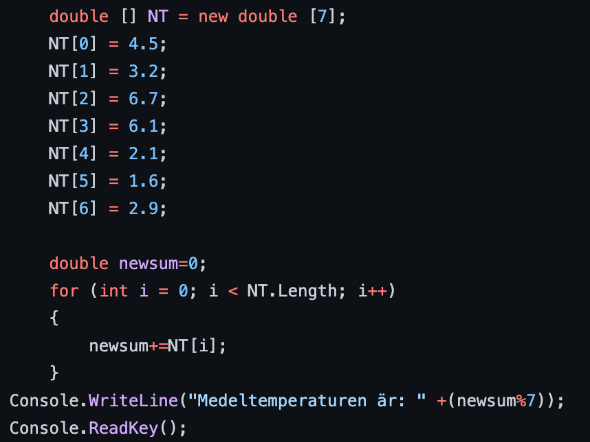

Mina Projekt
C#
Just nu håller jag inte på med något stort, men jag har testat olika saker förut.
Fint Väder Projekt
Jag har gjort ett program som frågar om det är fint väder ute eller inte, beroende på hur du svarar så säger den något specifikt.
Först frågar den om vädret är fint eller inte och ger dig två alternativ, Y/N. Den kollar sedan vad användaren svarar och gör något specifikt för det. Om du svara Y så säger den "Vi går på picknick", om du svarar N så säger den "Vi stannar inne och läser en bok", och om du säger något helt annat än alternativen så säger programmet att svaret inte är ett alternativ.
Arrays
Jag har gjort två olika program som använder Arrayer.
Det första programmet frågar dig efter 5 olika heltal och skriver sedan ut heltalen i ordning från minsta till största talet. Det gör detta med hjälp av att skapa en array som innehåller 7 element eller heltal som användaren sedan ska skriva in. När användaren har sedan matat in heltalen så kollar programmet vilket so är lägsta heltalet och skriver sedan ut de i ordning.
Det andra programmet tar 7 olika tal som är redan inskrivna, den tar och adderar allihopa och sedan delar summan med 7 för att få fram medelvärdet. Jag skrev detta programmet för en uppgift jag hade i skolan.
Gissa Tal
Det största projektet jag har jobbat på i C# är ett gissa tal spel, där programmet tänker på ett tal och låter dig gissa.
Hur programmet funkar är att datorn först väljer ett tal mellan 1 till 100 och frågar sedan användaren att gissa på vilket tal programmet tänker på. Användaren får oändligt antal försök men datorn räknar fortfarande hur många försök man gör och skriver sedan ut det när man har gissat rätt tal. Beroende på hur du svarar så kan programmet säga om talet är för lågt eller för högt, och det fortsätter tills användaren svarar rätt.
Arduino C++
I Arduino så gör vi lite olika saker, vi lär oss mest om hur man använder och programmerar komponenter och gör ibland lite småa projekt som inte är så interessanta.
Webbutveckling: Html, Javascript, CSS
Jag har skapat några webbsidor includerat denna sidan, flesta av de är bara att jag prövar på olika saker och andra är för att kunna se vad jag kan göra. Än så länge har jag inte gjort något interessant men före jag började jobba på denna webbsidan så höll jag på med min egen sorts projekt där jag försökte göra så att en bild ändras när man tryckte på en knapp. Jag gjorde så att fyra animationer visades samtidigt och så spelades en låt upp när man tryckte på knappen. Jag skapade webbsidan bara för att jag var lite uttråkad och ville göra något roligt med webbutveckling.